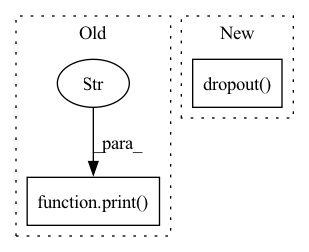

Pattern ID :3774

Before Change
self.fc3 = nn.Linear(84, 10)
def forward(self, x):
print("x:")
print(x)
print(len(x))
x = F.relu(self.pool(self.conv1(x)))
x = F.relu(self.pool(self.conv2(x)))
After Change
// print(x.shape)
x = x.view(-1, 20 * 30 * 30)
x = F.relu(self.fc1(x))
x = F.dropout(x, training=self.training)
x = self.fc2(x)
return x
In pattern: SUPERPATTERN
Frequency: 3
Non-data size: 2
Instances
Fragment ID: 14134833
Project Name: abdullahselek/plant-disease-classification-pytorch
Commit Name: d9334944630cdb79c98f1ab59b926555a52d2dd9
Time: 2020-11-08
Author: abdullahselek@gmail.com
File Name: plant_disease_classification_pytorch/network.py
M Class Name: CNN
N Class Name: CNN
M Method Name: forward(2)
N Method Name: forward(2)
M Parent Class: nn.Module
N Parent Class: nn.Module
M File Name: plant_disease_classification_pytorch/network.py
N File Name: plant_disease_classification_pytorch/network.py
M Start Line: 28
M End Line: 36
N Start Line: 20
N End Line: 27
'>
Before Change
tok = self.tok_embed(seq) * self.scale
if contains_nan(tok):
print(self.config.vocab_size, self.config.hidden_size)
print(seq, "\n", self.tok_embed(seq), "\n", contains_nan(self.tok_embed(seq)), "\n", self.scale)
tok_type = self.tok_type_embed(tok_type_ids)
seq = tok + pos + tok_type
print("pos: {}\ntok: {}\ntok_type: {}".format(contains_nan(pos), contains_nan(tok), contains_nan(tok_type)))
if any([contains_nan(pos), contains_nan(tok), contains_nan(tok_type)]):
After Change
pos = self.pos_encoding(torch.arange(0, seq.shape[1]).unsqueeze(0).repeat(seq.shape[0], 1).to(self.args.device))
tok = self.tok_embed(seq) * self.scale
tok_type = self.tok_type_embed(tok_type_ids)
seq = self.dropout(tok + pos + tok_type)
if contains_nan(seq):
print(contains_nan(pos), contains_nan(tok), contains_nan(tok_type))
raise RuntimeError("One of pos, tok, or tok_type contains a nan")
seq = seq.transpose(0, 1)
'>
Fragment ID: 14134832
Project Name: ammesatyajit/videobert
Commit Name: f759172a9920012cc205730684e16660432093b5
Time: 2020-10-10
Author: ammesatyajit@gmail.com
File Name: VideoBERT/train/custom_vid_transformer.py
M Class Name: VideoTransformer
N Class Name: VideoTransformer
M Method Name: get_outputs(5)
N Method Name: get_outputs(5)
M Parent Class: nn.Module
N Parent Class: nn.Module
M File Name: VideoBERT/train/custom_vid_transformer.py
N File Name: VideoBERT/train/custom_vid_transformer.py
M Start Line: 242
M End Line: 250
N Start Line: 242
N End Line: 247
'>
Before Change
src_key_padding_mask=key_pad_mask,
tgt_key_padding_mask=key_pad_mask,
memory_key_padding_mask=key_pad_mask).transpose(0, 1)
print("out:", contains_nan(out))
return self.fc_out(out)
def from_pretrained(self, config, args):
model = VideoTransformer(config, args)
After Change
pos = self.pos_encoding(torch.arange(0, seq.shape[1]).unsqueeze(0).repeat(seq.shape[0], 1).to(self.args.device))
tok = self.tok_embed(seq) * self.scale
tok_type = self.tok_type_embed(tok_type_ids)
seq = self.dropout(tok + pos + tok_type)
seq = seq.transpose(0, 1)
out = self.transformer(seq,
seq,
src_mask=attn_mask,
'>
Fragment ID: 14134829
Project Name: ammesatyajit/videobert
Commit Name: 334aaaed1a08286a9c6b34782b9a47b254290635
Time: 2020-10-06
Author: ammesatyajit@gmail.com
File Name: VideoBERT/train/custom_vid_transformer.py
M Class Name: VideoTransformer
N Class Name: VideoTransformer
M Method Name: get_outputs(5)
N Method Name: get_outputs(5)
M Parent Class: nn.Module
N Parent Class: nn.Module
M File Name: VideoBERT/train/custom_vid_transformer.py
N File Name: VideoBERT/train/custom_vid_transformer.py
M Start Line: 240
M End Line: 254
N Start Line: 242
N End Line: 243